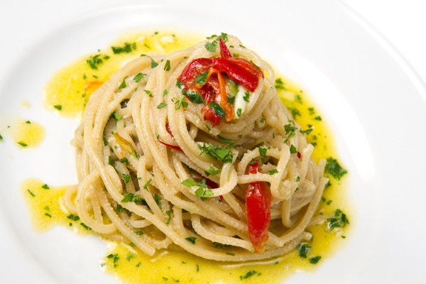

Aglio, Oglio e Peperoncino

Description
Aglio, olio e peperoncino defines Italian food like no other. Its simplicity, focusing on quality ingredients and letting their flavors shine through is what’s most important in Italian cooking. This dish is a perfect example of how a few simple components can come together to create a masterpiece.
The key to make a banger aglio, olio e peperoncino is the ratio of the ingredients and using enough olive oil. You also have to make sure that the garlic doesn’t brown or burns, it just has to slightly simmer so the garlic releases all it's flavor to the olive oil.
Ingredients
- Spaghetti
- Olive Oil
- Garlic cloves, chopped
- Spicy chili peppers
- Chopped leaf parsley
- Salt and Pepper
Steps
- Bring a pot with salted water to a boil.
- Cook the spaghetti al dente. Keep a cup of pasta water aside before draining.
- Pour the olive oil into a pan and set over low heat.
- Add the garlic and chili pepper and simmer gently for a few minutes. Pay attention to the garlic and reduce the heat if necessary. The garlic should not burn.
- Add the parsley
- Then add the cooked pasta and the cup of pasta water.
- On low heat, mix everything well and serve with the fresh parsley.
- Season with salt and pepper if necessary.
- Buon appetito!
HOME